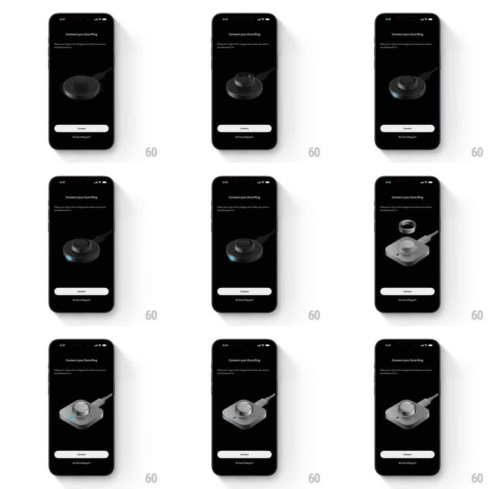

Media
Frame-by-frame

Rebuild this animation 1:1: Oura's connect-charger onboarding - a photoreal 3D ring charger rotates slowly on black and crossfades between charger models while the ring hovers into place above the pad.

Rebuild this animation 1:1: Oura's connect-charger onboarding - a photoreal 3D ring charger rotates slowly on black and crossfades between charger models while the ring hovers into place above the pad. ## Integration Integration: stack-agnostic spec - springs given as stiffness/damping, timed motions as duration + curve; map every value to your framework and animation library of choice. ## Scene Dark pairing screen: "Connect your Oura Ring" title with instructions top-left, the 3D charger render center-stage on pure black, a white "Connect" button, and a "No Oura Ring yet?" text link at the bottom. ## Motion spec Pattern: rotating 3D hardware showcase with model crossfades. - The charger idles with a slow turntable rotation (one revolution ~10s, linear) and a faint blue status LED that breathes (opacity 0.3 -> 1, 2.5s). - Every ~3s the render crossfades to the next charger model (300ms dissolve) at the same rotation phase so the swap reads as a morph, not a cut. - On the square-charger variant, the ring floats above the pad with a gentle hover (+/- 4px, 2.5s, ease-in-out) and a soft cast shadow that scales with height. - Title, button, and link stay static throughout. ## Calibration - Lighting is studio-dark: a single key light tracing metal edges as the model turns. - Crossfades keep size and position identical between models - only the hardware changes. ## Reduced motion Static three-quarter render; model swaps fade without rotation. ## Don't miss - The LED glow is the only color accent on the hardware - keep it small and cool. - The ring never touches the pad during the hover loop.